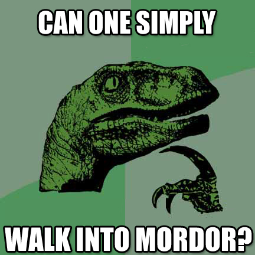
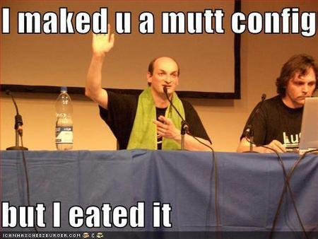
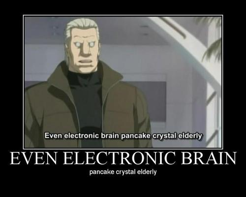

Jul 02 2009

Di botto mi sento corrotto, mi tiro fuori il pisciotto
Per una volta di merda in cui decido di non lasciare che la diOstrazione e il malo dito rovinino i miei preziosi SCRITTI, ecco che l’uccello del malaugurio di dio padre amaro mi finisce DIRITTO nel culo. L’ERRORE VIENE MOLTIPLICAZZO. Spell check dei miei coglioni pissati dall’alto dei cieli in tempesta.
Nel profondo del mio cuore io so bene che OGNI scritto va SCRITTO con VIM, perche’ VIM e’ l’editor per chi ha la VOTAMAZZA che scorre FORTISSIMO dentro, per chi affronta con petto DUXXO l’orrenda pratica della programmazione, per chi FOTTE CUTTANDO E PASTANDO, perche’ con una mano scrivo e con l’altra VIM-CULO. Eppure mi debbo attaccare al cazzo, piegarmi all’utilizzo del soffice Ufficio Aperto Scrittore.
Open Office nato dalla merda, il cristo mio contro il cristo tuo, ALALA’ NO PASARAN = TILT.
Ecco che dopo qualche ora di lavoro decido di dare una passata di controllo ortografico, per correggere ad esempio le DIARROICHE accentate che NON ho sulla tastiera, o gli errori di ORTO-GRAN-FICA, tipo “SESISMO”. Ma il mio tentativo diventa subito vano, come una mano nel vano dell’ano. Open Office inizialmente sembra corregge i piccoli errori dell’orto, ma presto rivela la sua natura IGNORANTE con correzioni a cazzo di cane, tipo “closed”. Strano, penso, dato che la mia installazione IN TEORIA e’ in lingua ANGLA. O quantomeno default. Quindi angla/usa.
Controllo nelle opzioni… e all’improvviso…
NON CI CAPISCO PIU’ UN CAZZO. DOMANDE INUTILI APPAIONO NELLA MIA MENTE ORMAI CORROTTA DAL VERBO STORPIATP.

mordor e' vicina
Mi guardo intorno e vedo la DESOLAZIONE DI MORDOR. UN ORRORRO CHE SI MORDOR LA CODAR.
Piu’ guardo le opzioni della LINGUA TRA LE CHIAPPE di Open Office e piu’ NON CAPISCO NIENTE, anzi comincio a DIMENTICARE TUTTO. Non capisco cosa intende con quei menu’ saccenti, quelle opzioni che non cambiano apparentemente NULLA. PORCODDIO, su vim metti i dizionari in una directory e gli dici “EN,IT”. FINE. Tu Open Office invece mi devi fare venire i capelli bianchi con un GROSSISSIMO E GRIGIO menu’ inconcludente. Voglio cambiare il dizionario da BOH a MAH ? SEH!
Decido di fare finta di nulla, ma quando cristo e’ scalzo in una valle di lacrime ghiacciate la pioggia di cazzi piove per sempre. Open Office vuole correggermi TUTTA UNA FRASE in inglese, TUTTA. Bestemmio fortissimo, perche’ l’interfaccia di questo COSO e’ LENTA come le persone IN FICA PER I NEGROZI. Degenero tantissimo, divento HUMUS, perche’ non posso skippare i paragrafi, non posso scegliere di fare una correzione parziale, sono INCATENATO ALLO SPELLO, mentre IL e G mi vengono dati sulle gran palle. AIUTO, HO BISOGNO DELLA NONA CONFIGURAZIONE.

PORCODDYNE.Oltrepasso non so come la frase in inglese, addolorato e CORROTTO, NON CORRETTO (come suggerisce il pio eflags), ma un altro ostacolo, stavolta definitivo, mi si pone davanti. Io mi ero illuso. Mi ero illuso con quella colorazione bluetta che Open Office CAPISSE il concetto di collegamento ipertestuale, ma invece NO, perche’ inizia a correggermi PEZZI DI URL. MISSPELLO IL COCK IN FRONTE, SONO FRODO FIGLIO DI DROGO, L’ANELLO CERCAVO, MA INVECE MI DROGO.
Vuoi correggere con “DANIELA”? PORCODDDIOOOOOOOOOOOOOOOOOOOOOOOOOOOOOOOOOOOOOOOOOOOOOOO NOOOOOO

ESTORCER.
Comments Off